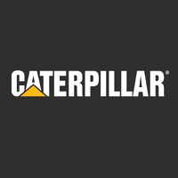
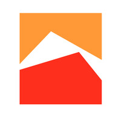
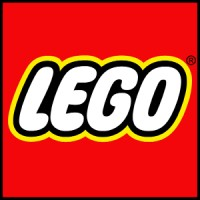

1. Caterpillar
Área de interés: Manufactura Avanzada e Innovación Tecnológica
Me interesa por sus proyectos globales de ingeniería, automatización y desarrollo de tecnología aplicada a maquinaria pesada.
Visitar sitio web de CaterpillarActividad Fundamental 6 (AF6)
A continuación presento las tres empresas donde me gustaría realizar mis prácticas profesionales:

Área de interés: Manufactura Avanzada e Innovación Tecnológica
Me interesa por sus proyectos globales de ingeniería, automatización y desarrollo de tecnología aplicada a maquinaria pesada.
Visitar sitio web de Caterpillar
Área de interés: Sistemas, Tecnologías de la Información y Automatización Industrial
Me interesa por sus oportunidades de desarrollo profesional en infraestructura tecnológica, soporte de sistemas y optimización de procesos siderúrgicos.
Visitar sitio web de Ternium
Área de interés: Innovación Digital, Cultura Organizacional y Tecnología
Me interesa por su enfoque en la innovación continua, el desarrollo de talento y sus entornos colaborativos centrados en la tecnología.
Visitar sitio web de LegoFactores principales por los que elegí estas organizaciones:
| Empresa | Ubicación | Enfoque Principal |
|---|---|---|
| Caterpillar | Nuevo León | Manufactura e Innovación |
| Ternium | Nuevo León | Sistemas e Infraestructura |
| Lego | Nuevo León | Tecnología y Cultura Digital |